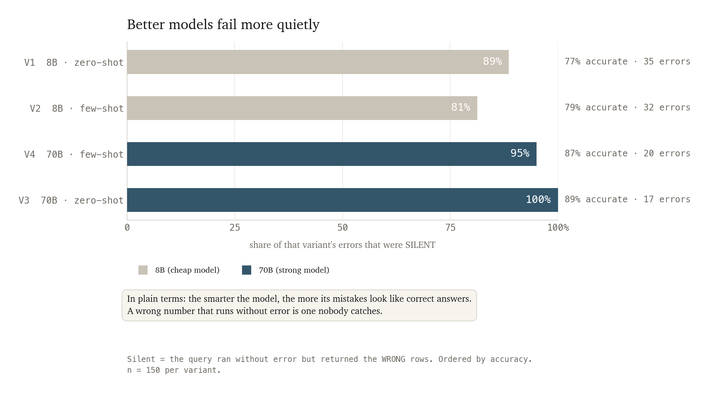
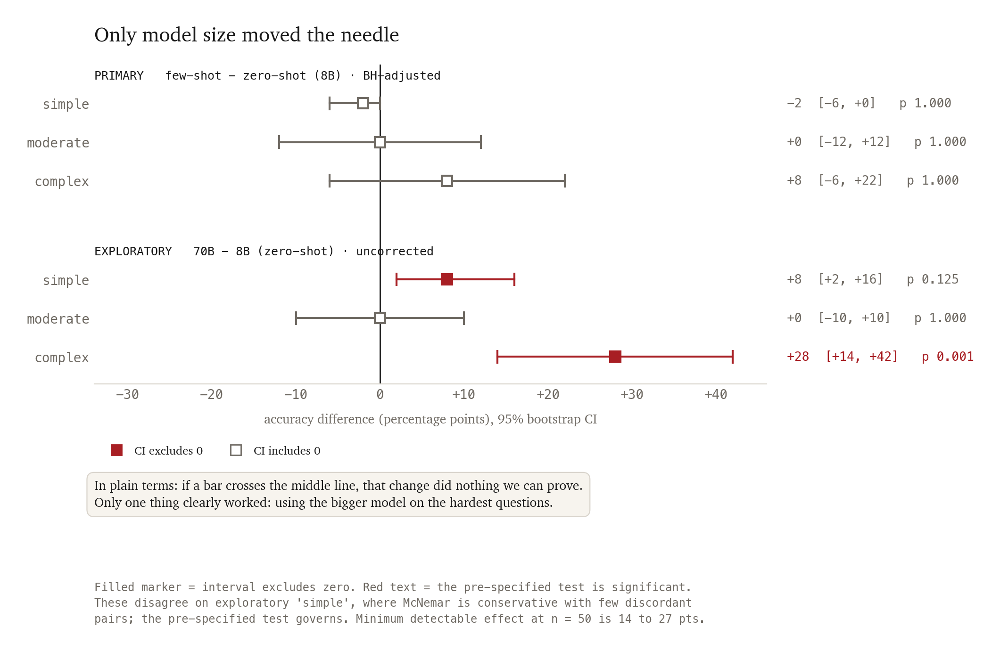
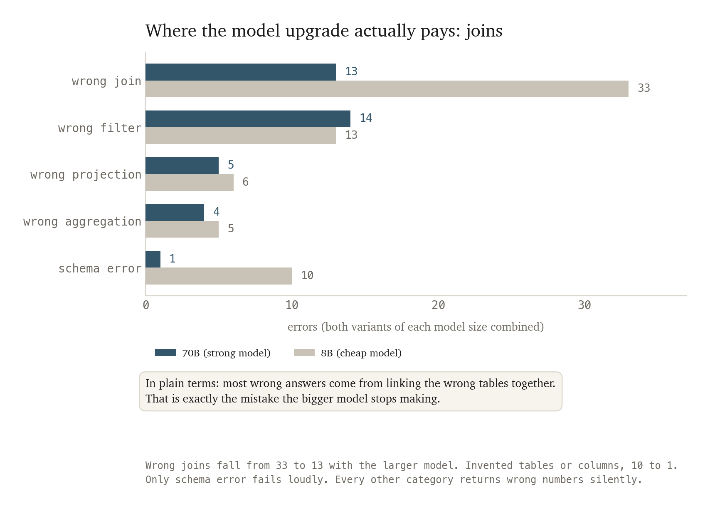
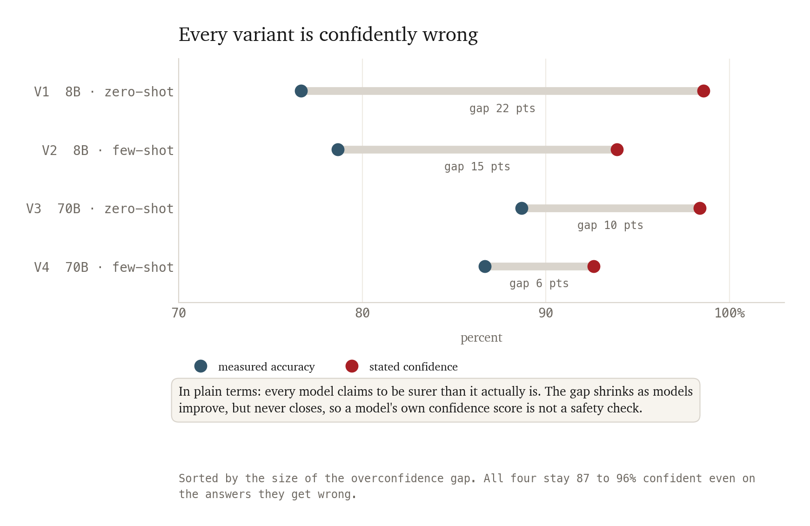
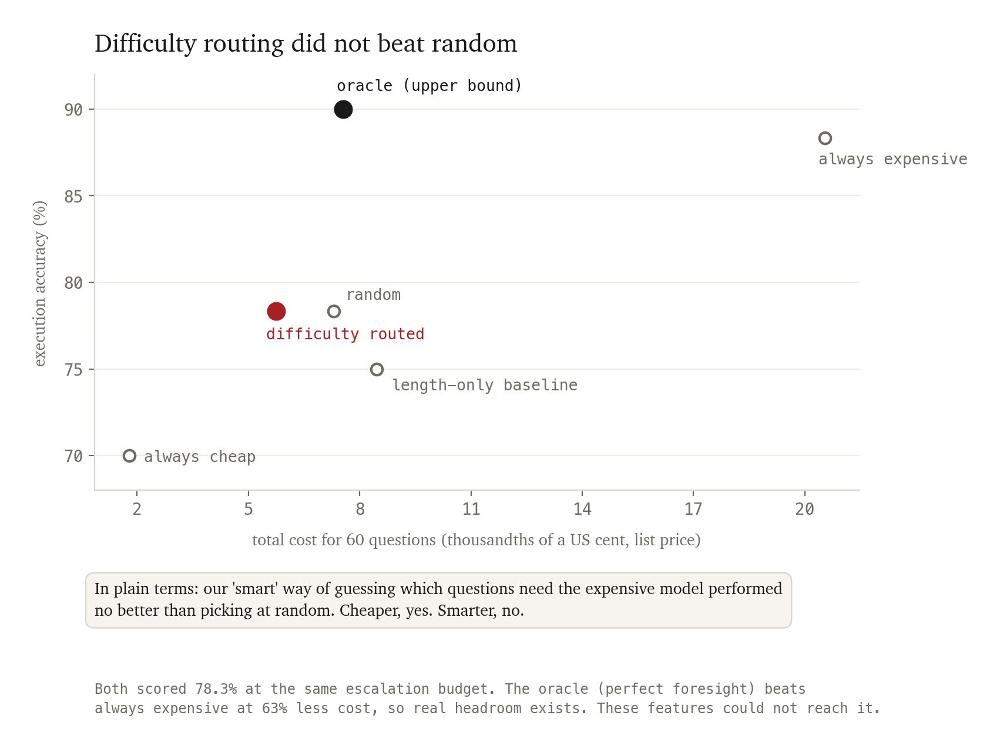

A query that throws a syntax error is a visible failure. A query that runs cleanly and returns plausible but wrong numbers is an invisible one. This study measures how often each happens across two prompting strategies and two model sizes, and finds the invisible kind gets worse as models get better.
150 natural-language questions were put to four configurations, two prompting strategies crossed with two model sizes. All 600 generated queries were executed against real SQLite databases and compared to human-written gold answers. The hypothesis, the primary metric and the statistical test were committed to version control before the full run.
Few-shot prompting produced no significant improvement at any difficulty tier. Model size did, but only on complex queries, and not at all in the middle tier. The most accurate configuration proved the most hazardous: every error it made executed without complaint and returned believable wrong numbers, at a mean self-reported confidence of 0.95.
Cross-model result disagreement predicted incorrectness far better than any model's own confidence (AUC 0.861 against 0.647), which is the basis for the deployment recommendation in section 07.
| Design | 2 × 2 factorial (prompt strategy × model size), three complexity tiers |
| Corpus | Spider, 150 questions across 93 databases, CC BY-SA 4.0 |
| Endpoint | Execution accuracy, binary per question, set comparison against gold |
| Test | McNemar exact on paired outcomes, 10,000 resample bootstrap CI, Benjamini Hochberg |
| Stack | Python, SQLite, Postgres, statsmodels, scikit-learn, sqlglot, matplotlib |
| Cost | $0.00 actual, $0.19 at published list prices |
Everything runs on free infrastructure: two Llama models on Groq for generation, Postgres for results, SQLite for the target databases. Before any experiment code ran, a verification script confirmed every dependency end to end.
Yardstick. Phase 0 verification ✓ PASS env (.env loaded; set: GROQ_API_KEY, DATABASE_URL) ✓ PASS supabase-postgres (connected; all 5 tables present) ✓ PASS groq-api (llama-3.1-8b-instant ✓ llama-3.3-70b-versatile ✓) ✓ PASS sqlite-readonly (opened mode=ro, read 3 rows, writes blocked) Phase 0 exit criteria MET ✓ (DB, both providers, read-only SQLite all verified)
Difficulty tiers come from Spider's own eval_hardness() function rather
than from my judgement, so the tier boundaries cannot be accused of being drawn to fit
the conclusion. Every gold query was executed before its question entered the sample.
The two hand-review exclusions shared a defect: a join condition comparing a column to itself, which silently produces a cartesian product, plus a select list returning last names where the question asked for first names. Benchmarks contain broken ground truth. Including it would have measured that rather than the models.
A silent failure is a generated query that executed without error and returned the wrong rows. Ordered by accuracy, both large-model variants sit above both small-model variants on this measure.

Broken out by question difficulty rather than by variant, 82% of errors on complex questions were silent, 95% on simple, and 97% on the middle tier. The strongest model also reported 95% average confidence on the answers it got wrong, so nothing in its own output flags the problem.
SELECT job_title
FROM jobs
WHERE min_salary > 9000
SELECT JOB_TITLE
FROM jobs
WHERE MAX_SALARY > 9000

Every prompt-effect interval crosses zero. A ten-question pilot had suggested few-shot nearly doubled accuracy on complex queries. At the full sample it collapsed to a non-significant eight points. The pre-registration is the reason this appears as a null result rather than a discovery.
complex (n=50 paired)
V1 acc=0.600 V2 acc=0.680 diff=+8.0 pts 95% CI [-6.0, +22.0]
discordant: V1-only=5 V2-only=9 (both correct=25, both wrong=11)
McNemar exact p = 0.4240
Benjamini-Hochberg FDR across the primary comparisons (α=0.05):
simple raw p=1.0000 adj p=1.0000 not significant
moderate raw p=1.0000 adj p=1.0000 not significant
complex raw p=0.4240 adj p=1.0000 not significant
| Tier | V1 8B zero | V2 8B few | V3 70B zero | V4 70B few |
|---|---|---|---|---|
| simple | 0.88 [.12] | 0.86 [.14] | 0.96 [.04] | 0.92 [.06] |
| moderate | 0.82 [.18] | 0.82 [.16] | 0.82 [.18] | 0.84 [.16] |
| complex | 0.60 [.32] | 0.68 [.22] | 0.88 [.12] | 0.84 [.16] |
The 8B to 70B upgrade gave +28 points on complex queries (95% CI [+14, +42], p = 0.0013) zero-shot and +16 points (p = 0.039) few-shot. Those are the only significant effects in the study. On the moderate tier the same upgrade gave exactly zero: every variant landed between 0.82 and 0.84, which suggests whatever limits accuracy there is not something this design manipulates.


The weakest variant reported 98.6% average confidence while being correct 76.7% of the time. All four stay between 87% and 96% confident on the answers they get wrong, so confidence carries almost no information about whether any specific query is right.
| Signal | AUC | Flags | Errors caught | False alarms |
|---|---|---|---|---|
| Cross-model result agreement | 0.861 | 28% | 84% | 16% |
| Query structure agreement | 0.710 | 74% | 100% | 69% |
| Self-reported confidence | 0.647 | n/a | n/a | n/a |
None of these signals requires the correct answer, so all three are available in production. Reviewing only the 28% of queries where two models disagree on the executed result catches 84% of all errors, at a 16% false-alarm rate. That costs one extra call to a cheap model.

The predictor uses only features computable from the question text and the schema, before any SQL is generated. A single feature, question length, scored AUC 0.724 and beat the six-feature model at 0.665. Schema size was noise at 0.507. Holding out an entire tier dropped complex-tier prediction to chance. Holding out entire databases, which is the production question, held at 0.670 across 93 folds.
Two findings here matter more than the routing number. The oracle reached 0.900 accuracy at 37% of the always-expensive cost, beating always-expensive on both axes, so real headroom exists and these features could not reach it. And cost and difficulty are driven by different things: question length predicts difficulty but not cost, while schema size predicts cost almost perfectly (r = 0.95) and difficulty not at all. Input tokens are 95% of spend because the schema is pasted into every prompt.
The scorer was cross-validated against the official Spider evaluation script. The one disagreement is a spurious match, two structurally different queries that both happened to return 12, which is the known limitation of single-instance execution accuracy rather than a defect in the comparison logic.
Cross-check of 30 V1 predictions vs official eval_exec_match: scored by both : 19 AGREE : 18/19 (95%) disagree : 1 unscorable by official (parser/schema limits): 11
The experiment ran entirely on free-tier infrastructure, which imposed a real constraint. The 70B model carries a hard daily token ceiling, and the run hit it:
Error code: 429 {'error': {'message': 'Rate limit reached for model `llama-3.3-70b-versatile` in organization `org_01kv...` service tier `on_demand` on tokens per day (TPD): Limit 100000, Used 99060, Requested 1048. Please try again in 12m16s.'}} Generated 165, skipped(cached) 19, failed 16.